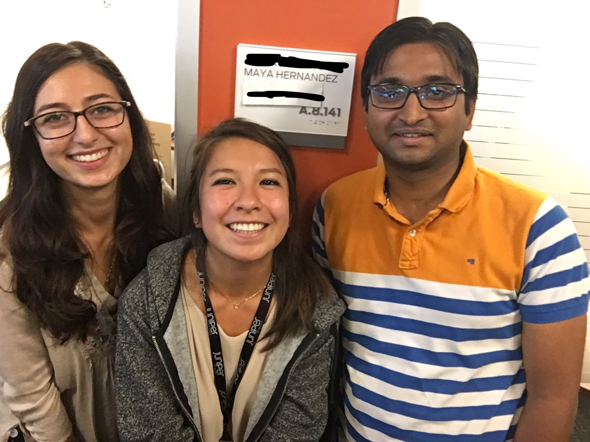
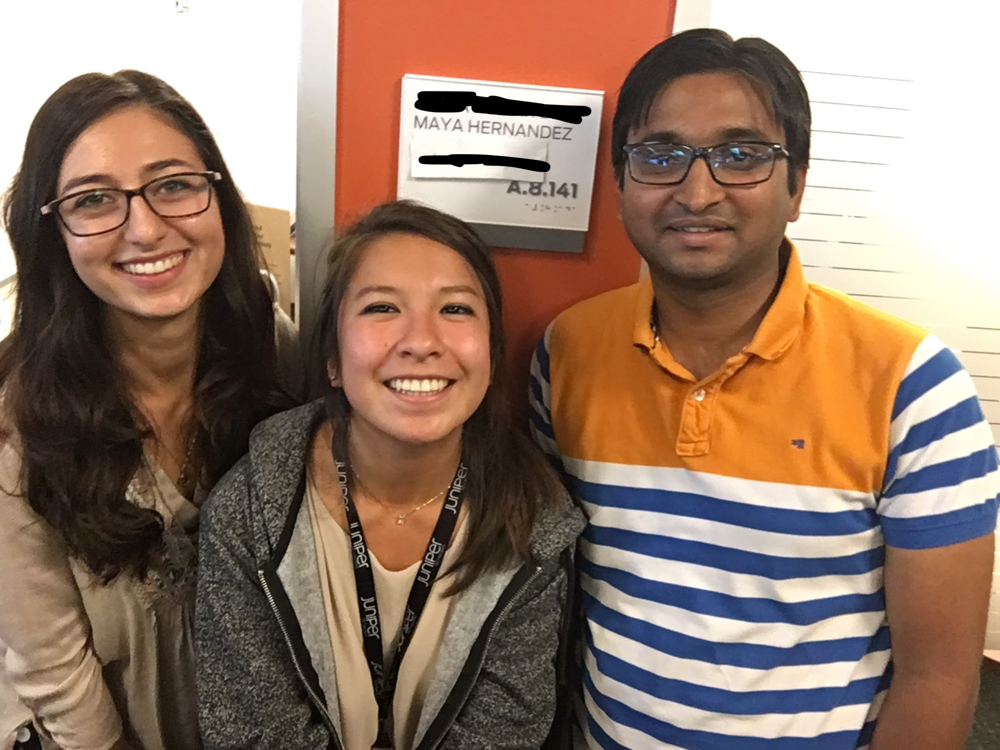
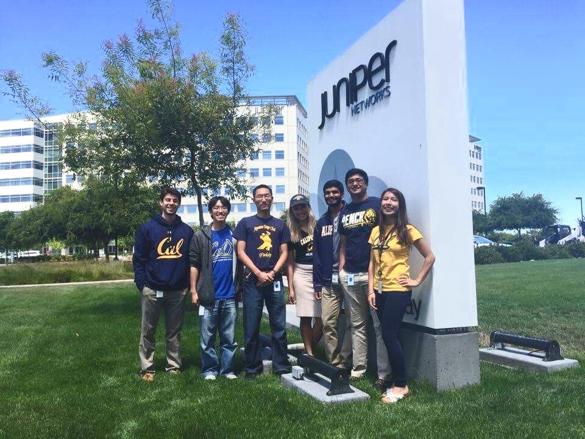
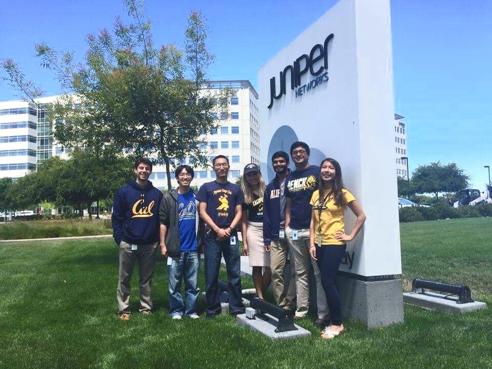

In the summer of 2016 between junior and senior year of university, I interned as a software developer at Juniper Networks on the Product Line Management/Technical Marketing Engineering team, which was a sort of technical product services department. In this internship, I created a website with Linux, Apache 2, MySQL, PHP, HTML, and CSS to easily search through a database of automation tools and code such as PyEZ and Slax scripts to expand awareness and usability of automation. Since Pokemon Go was big in summer 2016 and my Automation Tools and Code Index highly resembled a Pokedex which are used to search for Pokemon, I decided on a Pokemon theme for the intern showcase, with automation tools and scripts as the Pokemon. I made a video with dubbed subtitles about my project over the Pokemon theme song, stickers and handouts as Pokemon cards with information on various automation tools and links to the site itself, which can only be accessed within Juniper's VPN.
Overall I appreciated my managers who were incredibly supportive and taught me more about the industry in general and this internship for exposing me to that sort of old school technology, corporate, business casual, big company culture in Silicon Valley with the money to host proper intern events. I got a taste of living in South Bay without a car, that Caltrain and VTA light rail life. And despite its boring veneer, with the comradarie of the other interns we made the most of Castro St Mountain View and Downtown Palo Alto and nights playing Avalon in front of the Stanford church. And via work happy hours and newly turning 21, I discovered I liked beer. Stella specifically. It was a great summer I look back fondly on.
 

 
